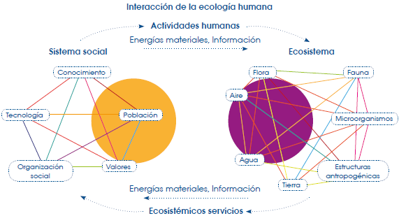
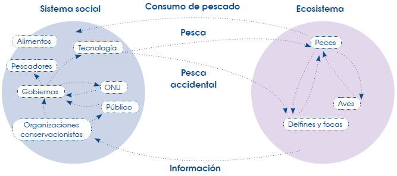
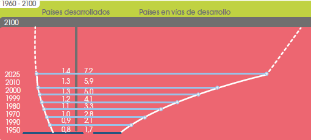
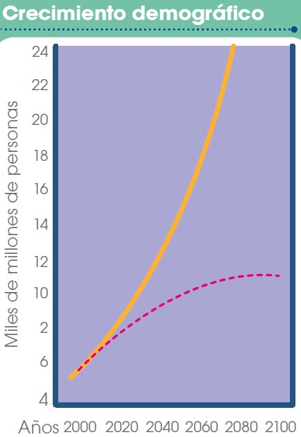
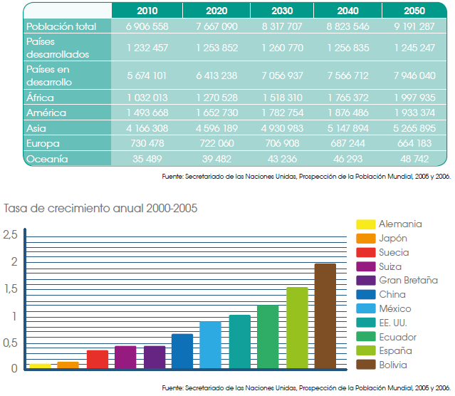

Ecología y crecimiento poblacional de los seres humanos
Ecología humana
¿Qué es la ecología humana?
La ecología es la ciencia que estudia las relaciones entre el medioambiente y los seres vivos; por lo tanto, la ecología humana se encarga de estudiar las relaciones entre el medioambiente y las personas.
Cuando hablamos de medioambiente nos referimos a toda la comunidad biológica, es decir, todos los organismos vivos. Sin embargo, el medioambiente también abarca a la comunidad abiótica, que incluye a los factores ambientales y los formados por el ser humano (construcciones), de los cuales dependen los seres vivos para la vida.
Los ecosistemas no son definidos mediante límites o fronteras geográficas, ya que estos pueden ser de cualquier tamaño: pequeño como un estanque de agua e incluso el planeta Tierra.
En la ecología humana, todo el sistema está relacionado con las interacciones medioambientales, estas afectan directamente al comportamiento del ecosistema o se asientan sobre él. En otras palabras, todas las actividades humanas y organizaciones sociales están condicionadas por el medioambiente.

Servicios ambientales del ecosistema para los humanos
Para satisfacer todas las necesidades humanas es necesario el uso de los servicios. Estos servicios se basan en los recursos e incluyen el transporte de materia, de energía y de información, los dos últimos con una evidencia menor.
Casi toda la materia que se encuentra en la naturaleza es aprovechada por el ser humano sin embargo, hay sustancias que contienen energía y no es fácil manejarlas. Este es el caso del combustible.
La información proveniente de los servicios ambientales es fácil de detectar mediante la observación, ya que esta se mueve dentro del ecosistema.
Existen ejemplos claros para darnos cuenta del paso de información, estos pueden ser muy cotidianos como un agricultor trabajando en el campo, puesto que, para llegar a este punto, hay un proceso de germinación de semillas y de posterior cosecha; o una persona paseando por el bosque, la que complementa el proceso de fotosíntesis. Estas interacciones permiten que se den otras influencias recíprocas, que son directas entre el sistema social y el ecosistema.
Los ejemplos anteriores son interacciones con efectos mínimos en el ecosistema, pero también hay otras con consecuencias negativas, lo que se puede dar por el mal o indiscriminado uso de los recursos.
Los recursos más usados y los más indispensables para la vida son: el agua, los peces, la madera y la tierra. La mala utilización de estos recursos puede causar efectos muy dañinos al ecosistema.
Otro efecto negativo de los seres humanos a los servicios ambientales es la generación de desechos aunque haya un consumo mínimo de recursos.
A pesar de que los seres humanos tienen la posibilidad de utilizar los ecosistemas para su beneficio, se debe crear nuevas y adecuadas formas de manejo de los servicios ambientales para no terminar con todas los bienes que estos nos ofrecen.
A continuación, relacionaremos mediante un ejemplo claro la interacción social con un impacto negativo en el ecosistema. Hablaremos acerca de la pesca comercial o pesca de arrastre y la destrucción de los hábitats marinos.
La pesca de arrastre es el método de pesca más común a nivel mundial, también es el más dañino. Presuntamente, esta pesca está dirigida únicamente a los peces que se desean obtener del mar para el consumo del ser humano, esto significa una porción determinada del total de la diversidad de las especies que se encuentran en los fondos marinos.
A pesar de que el afán de los barcos pesqueros no sea dañar el fondo marino, los efectos de estas redes son devastadores.
Estas redes son arrastradas a lo largo de la profundidad y capturan todo lo que hay a su paso hasta afectar el ecosistema de esa zona.
Este tipo de pesca no solo causa daños y destrucción en el medioambiente, también genera efectos negativos en el sistema social. Estos consecuencias generalmente son a largo plazo.
Para representar de una manera clara todos estas efectos, observa en el gráfico las interacciones y sus posibles repercusiones a futuro.

Intensidad de la demanda sobre los ecosistemas
La acciones de la sociedad causan efectos extremadamente negativos a los ecosistemas y generalmente estos son a largo plazo. La relación entre el hombre y el ecosistema básicamente va a depender de la exigencia sobre los recursos que el medio provee y cómo estos pueden ser aprovechados.
Esta relación de dependencia se basa principalmente en la obtención de recursos energéticos que la naturaleza provee para nuestro uso; sin embargo, dentro de los medios que ocupamos, existen unos que son renovables y otros que son no renovables.
Los recursos renovables incluyen a los alimentos, el agua y los productos de origen forestal; mientras que los no renovables son recursos mineros y combustibles.
Generalmente, los seres humanos tendemos a pensar que, como estos recursos son renovables, son recursos infinitos; por este motivo, el hombre los ha usado indiscriminadamente y ha ocasionado que su proceso de regeneración sea mucho más extenso a lo habitual. Después del uso de estos productos, los devuelve al ecosistema como desechos. Este ciclo del sistema social y su uso es muy simple.
El uso de los servicios ambientales como ya se mencionó, es indispensable, pero el humano tiende a abusar de este hecho y convierte a los recursos en menos aprovechables, lo que limita su disponibilidad.
En la actualidad, requerimos un cambio inmediato sobre la demanda de recursos del ecosistema para que sigan siendo sustentables para generaciones venideras. Lo principal en esta variación es mantenerse bajo los límites de la explotación de los ecosistemas.
Uno de los problemas de mayor peso es el significativo aumento demográfico de la humanidad, que seguramente es el mayor responsable en la destrucción de los ecosistemas. Este crecimiento acelerado se ha acentuado de manera exponencial durante las últimas décadas, lo que ha provocado el crecimiento de las industrias y, en general, una sobredemanda material.
En los últimos años, las personas han percibido de manera muy directa los efectos del abuso de los recursos ambientales. Esto ha provocado que se genere una conciencia ambiental y de conservación.
Este avance ha provocado un mejoramiento en el sistema social y ha reducido, en cierto grado, la intensidad de las exigencias sobre el ecosistema y, a la vez, ha fomentado la utilización de tecnologías más amigables con el medioambiente y que reduzcan la contaminación.
Esta conciencia ambiental se distingue más en países donde las poblaciones generalmente son pequeñas y se tiene mejores accesos a servicios básicos y a una mejor educación; de ese modo, estas naciones han implementado tecnologías más eficientes. No obstante, los países en vías de desarrollo, en los cuales existen altos índices poblacionales y altos niveles de pobreza, se ven obligados a realizar actividades extremadamente dañinas para el medioambiente, las que han causado efectos desastrosos tanto en sus recursos renovables como no renovables.
Las naciones del primer mundo no cuentan con la materia prima necesaria para satisfacer sus necesidades; la materia prima se extrae de los países en vías de desarrollo. En un contexto económico que se centra en una alta tasa de consumo y, por ende, en una fuerte demanda de producción industrial, se producen efectos ambientales irreversibles que afectan las calidad de vida de todos los seres vivos.
La intensidad de la demanda sobre los ecosistemas puede ser representada en una simple ecuación que ayudaría a entender, de una mejor manera, cómo se podría trabajar de un modo más sustentable frente a los recursos. La ecuación es:
Intensidad de la demanda sobre los ecosistemas = población * niveles de consumo * tecnología
Mediante esta ecuación, podemos llegar a determinar la cantidad de recursos materiales y energéticos que requerimos para todo tipo de producción. Además, se puede llegar a definir el porcentaje de contaminación que es generado por las producciones principalmente agrícolas e industriales.
Crecimiento y modelos poblacionales
Evolución de la población humana
La población humana sobrepasa los 6,7 mil millones de habitantes y cada día esta cifra se incrementa aproximadamente en 260 000 personas. Su crecimiento se produce en progresión geométrica y se estima que dentro de 50 años la humanidad estará compuesta por 9000 millones de habitantes.
El crecimiento de la población implica un aumento en el consumo de los recursos, lo que conlleva a una mayor demanda de los ecosistemas y genera problemas ambientales.
El aumento de la población es más evidente, sobre todo, en los países en vías de desarrollo. Estas naciones poseen menos medios para afrontar los problemas ambientales, económicos y sociales ligados al aumento demográfico.

Existen dos problemas estrechamente ligados al crecimiento poblacional: el hambre, como efecto de la mala distribución de los recursos, y el acrecentamiento de los asentamientos urbanos.
Crecimiento de la población
La evolución de la población humana ha sido estudiada por la Organización de las Naciones Unidas (ONU), que ha definido una serie de posibles situaciones y la repercusión demográfica que estas tendrían.
Dos ejemplos de estas situaciones son:
• Los valores de los índices de fecundidad y mortalidad de 1990 se mantienen constantes en el tiempo. Este hecho podría significar problemas de superpoblación en la Tierra.
• La disminución de la tasa de fecundidad y la de mortalidad producen un aumento de la esperanza de vida. Alrededor del año 2100, se llegaría a la población máxima y, a partir de este momento, la cantidad de población empezaría a disminuir.
Estas previsiones coinciden con el siguiente aspecto:
• La Tierra experimentará un rápido crecimiento demográfico durante los próximos cincuenta o sesenta años, el que puede duplicar la población actual.
• La población envejecerá, estará más concentrada en las ciudades y será más pobre, ya que el crecimiento poblacional se concentrará en los países en vías de desarrollo.

Previsión del crecimiento mundial
Como ya hemos visto, nuestro planeta está habitado por millones de personas que pueblan todas las regiones de la Tierra.
El crecimiento de esta población no ha sido homogéneo en el mundo. En los países en vías de desarrollo se concentra el 82% de los habitantes, mientras que el 18% restante conforma la población de los países industrializados.
En la siguiente tabla podemos ver una proyección de la población mundial hasta el año 2050, según los datos extraídos de los informes de las Naciones Unidas:

Los países donde existe más pobreza, desigualdad y problemas ligados al subdesarrollo presentan, en general, mayores niveles de fecundidad y altas tasas de natalidad. Algunos factores que influyen son:
• El tiempo de escolarización: incide sobre la edad en que las mujeres y los hombres deciden tener hijos. Así, en los países en vías de desarrollo, la edad de concepción es menor a la de los países desarrollados.
• La disponibilidad de información sobre sexualidad humana y el acceso a métodos anticonceptivos: Estos recursos son más asequibles en los países desarrollados y contribuyen de forma importante en las decisiones sobre la procreación.
• Mayor tolerancia social hacia las decisiones individuales relacionadas con la procreación, la vida en pareja y la sexualidad: El respeto hacia las resoluciones individuales es más evidente en los países desarrollados.
Distribución de la población mundial
Durante este siglo se prevé un crecimiento demográfico significativo en los países más pobres, el que se verá acentuado a partir de la década de 2020, en este período más del 85% de la población mundial se concentrará en los países en vías de desarrollo. En otras palabras, 4 de cada 5 personas vivirán en países de ingresos bajos.
Asia es la región con mayor población del mundo, ya que concentra más del 60% de habitantes, seguida por América y África, que concentran un 22% y un 15% respectivamente.
Estas tendencias, del crecimiento demográfico, repercutirán en aspectos tan importantes como el progresivo envejecimiento de la población en los países desarrollados, o el aumento de la población en edad laboral en los países en desarrollo.
Modelos poblacionales
Las poblaciones humanas crecen de una manera exponencial y acelerada, lo que ha llegado a causar problemas a todos los seres vivos. Estos crecimientos tan abruptos dependen directamente de las tasas de natalidad y mortalidad y de cómo los seres humanos se van ajustando a la disponibilidad de los recursos.
Otro factor del cual dependen los niveles poblacionales es el de los cambios ambientales o catástrofes, los que pudieran estar limitando la presencia o el crecimiento humano. Estas condiciones ambientales son típicas en países donde existen una enorme cantidad de huracanes, enfermedades o condiciones climáticas extremas. Para llegar a entender estas relaciones de afluencia dentro de los sistemas biológicos, es importante entender que los seres vivos generalmente dependen y se alimentan de otros para subsistir.
Un ejemplo es la relación entre cazador y presa; otro, es la competencia entre especies para la obtención de un recurso.
Probablemente, el factor más determinante para entender los modelos poblacionales sea el territorio, puesto que, cuando los recursos comienzan a escasear, las poblaciones tienden a migrar y a asentarse en sitios donde los recursos presentan mayor disponibilidad. Los seres humanos han sido marcados por esta característica a lo largo de la historia.
El estudio de los modelos poblacionales en los hombres ha sido extenso y se han desarrollado modelos matemáticos para explicar su crecimiento. Sin embargo, estos no involucran a las migraciones.
Estos modelos poblacionales intentan explicar o predecir que en una población se puede medir la densidad poblacional mediante la siguiente variable: \(P = P(t)\).
P está representando a los individuos y P(t) cuenta el número de individuos de la población presentes en un tiempo determinado.
El modelo poblacional más utilizado es el modelo exponencial. Este modelo se basa en las leyes de crecimiento demográfico, que son una serie de ecuaciones que miden los niveles de población en unidades de tiempo determinadas. Además, este modelo exponencial involucra tasas de nacimientos y de muertes que en otros modelos no se toman en cuenta. La ecuación de este modelo es la siguiente:
\[ dP/dt = (rn - rm) P = r P \]
rn es la tasa de nacimientos de individuos y por unidad de tiempo y, rm es la tasa de muertes. La resta de ambas es la tasa de crecimiento neto (r) dentro de la población.
Este modelo es el que explica, de manera más acertada las tasas de reproducción, crecimiento y muerte de una población fija a lo largo del tiempo.
Capacidad de carga
Este término poblacional se refiere al máximo de población que puede mantenerse de forma indefinida sin agotar los recursos de un medio.
Al estudiar otras especies, se dedujo que cuando una población supera la capacidad de carga de su entorno, su tasa de mortalidad aumenta, lo que reduce la cantidad de población a porcentajes más sostenibles.
Si la población es superior a los recursos disponibles, nos encontramos en una situación de superpoblación, en la cual el hambre y las enfermedades asociadas a la malnutrición aumentarán la tasa de mortalidad.
En épocas pasadas, los grupos humanos emigraban hacia nuevas regiones para aligerar la superpoblación; actualmente, la posibilidad de canalizar la superpoblación mediante las migraciones es mínima, debido a que los territorios con déficit de población han disminuido y también a las estrictas leyes migratorias de muchos países.
El agotamiento de los recursos depende de la población y del nivel de consumo de cada habitante. Existe desigualdad en el uso de los recursos entre los distintos países.
Por estos motivos, algunos autores han propuesto tener en cuenta el Impacto Poblacional Total (IPT), que es el producto de la población por el uso de recursos por habitante.
Actualmente, a los países ricos, que cuentan con superpoblación de recursos, les corresponde el mayor número de unidades de impacto, mientras que a los países pobres, con superpoblación de individuos, una pequeña porción de estas unidades.
Si las unidades de impacto se distribuyeran entre los habitantes del planeta de una forma equitativa y solidaria, disminuiría el consumo de recursos en los países ricos.
La distribución equitativa podría conseguirse mediante la disminución del consumo en los países ricos, pero es una opción difícil de asumir, ya que significa modificar el nivel de vida de estas naciones.
Una solución alternativa es que los países desarrollados usen los recursos de manera más sostenible y apropiada en relación al medioambiente. Con acciones conscientes y con la adaptación de la cultura de ecoconsumidor se puede mejorar los hábitos de muchas empresas o industrias.
Bioingeniería y necesidades humanas
Bioingeniería: Generalidades
La bioingeniería es una ciencia que tiene un campo de estudio bastante amplio. Ha llegado a crear múltiples metodologías analíticas y sintéticas, mediante la utilización de principios físicos y matemáticos, para aplicar a muchas ciencias relacionadas al mejoramiento de la vida en algunos seres vivos.
El principal enfoque de la bioingeniería es el de la salud y la medicina del ser humano; un elemento de apoyo para esta ciencia ha sido la biotecnología, ya que permite crear y modificar muchos procesos biológicos con fines determinados, como la generación de medicinas, vacunas, prótesis, etcétera.
El desarrollo de la biotecnología involucra a ciencias como la física y la química. Estas son la base para el entendimiento de muchos procesos biológicos en los cuales se van a basar sus estudios.
El principal enfoque de la biotecnología es la medicina, teniendo una gran relación con la ciencia de la biología que nos ayuda a entender los procesos y ciclos biológicos de muchos organismos. Igualmente, nos ayuda a entender las relaciones entre los procesos biotecnológicos y su interacción con las metodologías de manejo y de operación de los sistemas biológicos.
Ramas de la bioingeniería
Ingeniería de bioprocesos
En la ingeniería de bioprocesos se involucra a todos los organismos vivos y sus respectivos componentes celulares para que provean bienes o servicios a los seres humanos. Cuando hablamos de bienes nos referimos principalmente a la salud y la alimentación.
Salud se refiere a la generación de antibióticos, vacunas, hormonas, ácidos orgánicos, etcétera.
Sin embargo, existen otros bienes, de gran aporte y que no están relacionados con la salud, como los biocombustibles.
En los servicios que proveen bienes a los seres humanos, incluimos a los procesos de biorremediación, tratamiento de efluentes, entre otros. Que en una forma abreviada los podemos denominar bioprocesos.
Un bioproceso involucra a todos los procedimientos con determinados sustratos o nutrientes, los que son transformados, mediante acción biológica (microorganismos, células, tejidos), en biomasa y otros productos.
Un bioproceso es caracterizado por tener:
• Catalizador biológico: Generalmente son enzimas, microorganismos, células vegetales, células animales, células insecto, hongos filamentosos, algas, plantas y animales.
• Biorreactor: Es un recipiente que ayuda a que la reacción ocurra en forma controlada.
La aplicación de esta rama a los alimentos es denominada biotecnología en alimentos.
La biotecnología en alimentos incluye al ámbito social para su funcionamiento. El uso de esta biotecnología beneficia tanto al agricultor como al consumidor: Se producen cultivos con un mejor resultado y rendimiento, y los consumidores tienen más ofertas a lo largo del año.
Beneficios de la biotecnología en la actualidad:
• Resistencia a las enfermedades.
• Reducción del uso de pesticidas.
• Alimentos más nutritivos.
• Tolerancia a los herbicidas.
• Cultivos de crecimiento más rápido.
• Mejor sabor y la calidad.
Se ha estudiado ampliamente la intervención de la biotecnología en varios alimentos como :
• Maíz, soja y algodón que con, las mejoras de la biotecnología, no necesitan tantos herbicidas/pesticidas.
• Soja con menor contenido de grasas saturadas y mayor contenido de ácido oleico, lo que ofrece una mejor estabilidad cuando se fríe.
Ingeniería genética
Este campo de estudio se inició en la década de los 70 y se comenzó a perfeccionar mediante las técnicas de manipulación de ADN, a partir de los análisis iniciales de esta molécula de la vida se llamó así a estos procesos.
Su principal enfoque es el estudio de la molécula de la herencia o ADN, lo que se hace mediante la introducción de ADN modificado a células vivas e incorporando como parte del material genético de estas. Numerosas investigaciones surgieron a partir de esta molécula; por ejemplo, la fracción del ADN humano que regula la síntesis de insulina. Estas técnicas también son incorporadas en temas de gran ayuda para la sociedad, ya que permiten solucionar problemas relacionados, principalmente con la salud.
El campo de la ingeniería genética es muy extenso y abarca a todos los seres vivos del planeta; sin embargo, hay unos grupos más examinados que otros.
Ingeniería genética en bacterias
Las bacterias son los organismos más analizados dentro del campo de la ingeniería genética. La bacteria más usada es la Escherichia coli. Sin embargo, en el campo de la microbiología existen muchas bacterias estudiadas con gran importancia para la salud humana.
Ingeniería genética en levaduras y hongos
Las levaduras y hongos, junto a las bacterias, son los sistemas mayormente estudiados. La levadura de Saccaromyces cerevisiae fue el primer genoma eucariota en ser secuenciado en su totalidad. Existen otras levaduras de importancia como la P. pastoris, que es utilizada para conseguir proinsulina en cultivo discontinuo y quitinasa en cultivo continuo. En el campo de los hongos, el que más se ha utilizado, y se destaca por su labor médica, pertenece al género Penicillium.
Manipulación genética para determinar un nuevo hongo
En la Universidad de Oregón en EE. UU. se descubrió a un hongo llamado Fusarium graminearum, con compuestos muy diferentes a los comunes y que podría servir para la generación de nuevos antibióticos. Este hongo se puede manipular únicamente a nivel genético, mediante el silenciamiento de sus genes, y gracias a la ingeniería genética que podría tener propiedades muy útiles para la medicina y quizás para la producción de biocombustibles también.
Ingeniería genética en animales
La manipulación genética en animales tiene diversos enfoques; entre estos están: generar animales con enfermedades de interés médico humano para investigaciones, aumentar el rendimiento en la producción del ganado, de la elaboración de fármacos, entre otros.
Los animales que se han llegado a producir mediante técnicas de ingeniería genética animal incluyen a:
Peces transgénicos: Son de fácil manipulación y han sido objeto de muchos estudios. Poseen fecundación externa lo que permite que la modificación de sus huevos sea más accesible y que, de ese modo, se pueda estudiar mejor las etapas de su desarrollo.
Mamíferos: Los mamíferos más estudiados son los ratones modificados por ingeniería genética en laboratorios (ratones knockout o KO); a pesar de que estos ya poseen demasiadas mutaciones en su genoma, su uso es puramente científico.
Los peces cebra
Son peces originarios de la India y de Bangladés, actualmente están distribuidos a nivel mundial. Su cuerpo es alargado, un poco aplanado y con presencia de una aleta dorsal. Son peces relativamente pequeños, alcanzan máximo 6 cm de longitud y su boca está para arriba. A pesar de que el color original de estos peces va de plateado a dorado, este presenta a lo largo de su cuerpo, bandas azules, entre 5 a 9 franjas, lo que le da su nombre característico.
Ingeniería genética en plantas
Actualmente, existen más de cuarenta especies de plantas modificadas genéticamente o transgénicas las que han conseguido tener características que no poseían como ser resistentes a enfermedades producidas por virus, a bacterias e incluso a insectos. También han desarrollado distintas mejoras como el aumento de la calidad y de la producción de un producto de interés comercial y agrícola, lo que refuerza su resistencia a diferentes factores ambientales.
En los productos de interés humano, como las plantas que dan frutos, la ingeniería genética ha ayudado a que tengan una maduración lenta y que lleguen al consumidor conservando su sabor, color, olor y textura intactos.
La biotecnología ha permitido el desarrollo de plantas transgénicas que tienen un alto potencial a nivel farmacológico, generando anticuerpos, hormonas y hasta proteínas.
Ingeniería biomédica
Dentro de la ingeniería biomédica es muy común referirse a conceptos de medicina y biología. En esta rama se combina el diseño y la capacidad de resolver problemas para el mejoramiento de la salud humana, de ese modo generar un diagnóstico y dar un tratamiento adecuado a los pacientes. Esta rama debido a lo extensa y compleja, ha surgido como una disciplina en la cual se enfoca la gran parte de la comunidad científica mundial.
Esta evolución interdisciplinaria dentro del campo de la biomédica consiste, principalmente, en la investigación y el desarrollo, por lo tanto abarca un gran rango de subcampos.
En cuanto a las aplicaciones de esta disciplina se incluyen: el desarrollo de prótesis biocompatibles; la generación de dispositivos que ayuden a determinar un mejor diagnóstico y terapia del paciente los que van desde dispositivos clínicos para microimplantes, hasta equipos que ayuden a una mejor visualización de anomalías dentro del cuerpo, como las resonancias magnéticas y los encefalogramas; la realización de estudios de enfoque sobre el crecimiento de tejido regenerativo, fármacos y productos biológicos de alto interés terapéutico.
Biomimética
La biomimética o biomimetismo es una ciencia, dentro del campo de la biomedicina, que estudia a la naturaleza como fuente interminable de ideas e inspiración para la generación de dispositivos y artefactos tecnológicos que ayuden a resolver los problemas de los humanos, los cuales la naturaleza, en su evolución, ya los ha solucionado. Dentro de esta rama se estudian otras ciencias, y modelos de sistemas como la mecánica, procesos químicos y elementos que se basan en la naturaleza.
La biomimética, además, es utilizada en la literatura científica y en las ingenierías, ya que hace referencia a los procesos de comprensión y aplicación de soluciones que da la naturaleza, estos procesos se muestran como principios biológicos, biomateriales o de cualquier otra índole para colaborar a la solución de los problemas humanos.
La naturaleza y el universo, en general, superan al ser humano con millones de años de evolución y de desarrollo. Por este motivo, la humanidad ha optado por reproducir sus modelos de creación, de adaptación y de organización.
Ya se han creado muchos modelos de esta rama. Un caso muy conocido es acerca del Kevlar, es un tejido que es incomparable con cualquier otro gracias a la resistencia que tiene que es muy similar al tejido de una araña. Otro ejemplo simple y muy conocido es la cabeza de los trenes de alta velocidad del cual se ha tomado como modelo a la forma de la cabeza que tienen los patos.
Actualmente nuevos campos se están generando a partir de esta ciencia, el más conocido es la nanotecnología que se enfoca principalmente a la utilización de metodologías de síntesis novedosas que intentan imitar la síntesis de autoensamblaje y con altos rendimientos de la naturaleza.
Janine Benyus realizó una afirmación que va muy de acuerdo con la biomimética, ella dijo: «El primer nivel es imitar la forma natural. Pero se puede acceder a un segundo nivel, que es cuando se imita el proceso natural. Y un tercero, copiando el funcionamiento de los ecosistemas».
(Sarah E. Gilpin y Harald C. Ott. Using Nature´s Platform to Engineer Bio-Artificial Lungs. 2015).
Nueva técnica para reparar pulmones dañados que no pueden trasplantarse.
Esta técnica consiste principalmente en generar pulmones de colágeno o cauchos de silicona que servirá para pacientes afectados de Enfermedad Pulmonar Obstructiva Crónica (EPOC). Esta técnica fue descubierta por Sarah Gilpin y Harald Ott que tratan los pulmones dañados de los pacientes y los pulmones donados que también están dañados con células madre que servirán para reparar esos tejidos. Ott ya consiguió varios pulmones artificiales y actualmente se encuentran en prueba en ratones de laboratorio y en un futuro se espera incorporarlo a los seres humanos.
(Sarah E. Gilpin y Harald C. Ott. Using Nature´s Platform to Engineer Bio-Artificial Lungs. 2015).